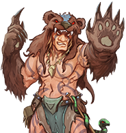

<section class="flex flex-col gap-4 h-full mt-5">
  
  <nav
      class="bg-tertiary shadow-center">
      <ul class="flex flex-col gap-2 w-full p-2">
        @for (item of sideBarItens(); track $index) {
          <li class="w-full">
            <a
              class="w-full flex"
              [routerLink]="item.route"
              routerLinkActive="active">
              {{ item.title }}
            </a>
          </li>
        }
      </ul>
  </nav>
</section>
